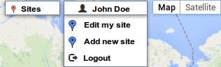
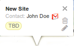
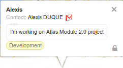

Week -1
Hey, let’s start for a pre-start weekly report ! As mentioned in my previous post, goals this week were to wrap up the timeline and UI, fixing priorities and begin coding (officially not really ;–) So, week starts with a cool hangout with my mentor. Talking with Burke is really a nice time, a good exercise for me to practise my spoken english, and to be more comfortable with OpenMRS developers community.
Burke gave grant me access to a dev server (Ubuntu 14.04  ) hosted by DigitalOcean. Abolutely unknown Cloud provider in France ! I will often push my work to share it with OpenMRS developers. You can have a look here : Atlas Server 2.0.
) hosted by DigitalOcean. Abolutely unknown Cloud provider in France ! I will often push my work to share it with OpenMRS developers. You can have a look here : Atlas Server 2.0.
On other hand, we have interesting email discussions with Elliott, about SSO, Auth stategy, and OpenMRS ID project (assigned to Wiehwa). As I’m really interested in security topics, it was really cool. Elliott looks to be an expert and I learnt a lot. 
What has been done this week :
- Refactoring Atlas Server with Laravel
- Atlas multipass auth strategy, allowing a user to authenticate with his OpenMRS ID in Altas Server.
- Add a dropdown menu providing controls for future marker management function.
- Add icons (trash, pencil, pad lock) on the bottom right corner of marker bubble.
  
Next Week Planning :
- Discuss Atlas database re-designing.
- User can create and edit a new marker (marker data not yet saved, just UI).
See you next week with update. 
Alex